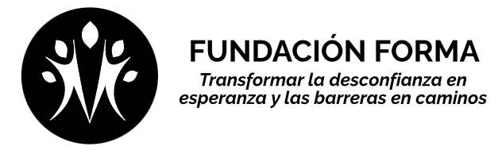
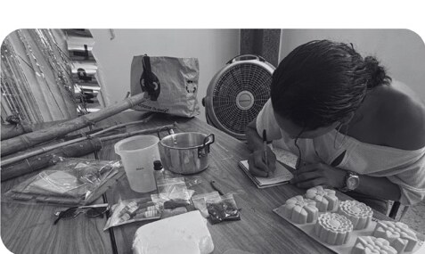
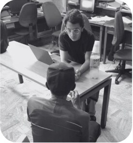
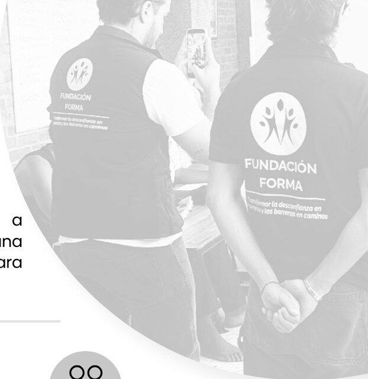

Estrategias integrales
Desarrollamos, articulamos y gestionamos estrategias jurídicas, sociales y comunitarias para eliminar barreras de acceso.

Fundación Forma · Cali, Colombia
Construimos puentes entre quienes pueden ayudar y quienes más lo necesitan.

Nuestra razón de ser
Cada ser humano posee el mismo valor y la misma dignidad. Sin embargo, muchas personas enfrentan realidades marcadas por la pobreza, el abandono, la exclusión o la falta de acceso a la justicia y a servicios esenciales.
La Fundación Forma nace para transformar esas barreras en oportunidades, acercando poblaciones en condición de vulnerabilidad a instituciones, organizaciones y personas que pueden contribuir a garantizar sus derechos y fortalecer sus proyectos de vida.
Acción con propósito
Desarrollamos, articulamos y gestionamos estrategias jurídicas, sociales y comunitarias para eliminar barreras de acceso.
Acercamos a poblaciones vulnerables con entidades públicas, organizaciones, empresas y programas sociales.
Trabajamos junto a las personas para fortalecer sus capacidades y acompañar la construcción de sus proyectos de vida.
Apoyamos organizaciones de base comunitaria para ampliar el alcance y multiplicar el impacto colectivo.
Nuestro modelo
Articulamos capacidades y necesidades para que los recursos, servicios y oportunidades lleguen a quienes más los necesitan.


Nuestra misión
Transformar la desconfianza en esperanza y las barreras en caminos de oportunidades, sirviendo a las poblaciones vulnerables que no tienen acceso a servicios legales, promoviendo el goce efectivo de sus derechos y contribuyendo a la construcción de una vida digna.
“Que las semillas de esperanza crezcan hasta convertirse en grandes árboles llenos de frutos para las personas y comunidades que más lo necesiten.”
Campaña ciudadana · Aporte compartido
Hoy acompañamos a 42 personas que viven en calle y necesitan recuperar su documento de identidad. Sin una cédula, se cierran puertas para acceder a un empleo formal, servicios de salud, productos financieros y programas sociales.
Trabajamos mediante un modelo de corresponsabilidad: cada participante reúne $40.000 y Fundación Forma aporta $41.100, que completan el valor de la cédula digital y la impresión y laminación de la contraseña provisional.
Cuando una persona no pueda realizar este aporte por circunstancias especiales, evaluaremos su caso individualmente. Con tu donación, Forma puede completar el siguiente trámite y acompañarlo hasta la entrega.
6,32 % de la meta para cofinanciar 42 trámites
Última actualización: 31 de agosto de 2026
Un esfuerzo compartido
La meta pública corresponde únicamente al aporte que debe reunir Fundación Forma para los 42 procesos. El valor aportado directamente por cada participante no se suma al contador de donaciones.
El costo incluye $76.100 de la cédula digital y $5.000 para imprimir y laminar la contraseña provisional que sirve como soporte durante el tiempo de espera.
El primer camino ya comenzó
El 28 de agosto de 2026 acompañamos a Jhon ante la Registraduría. Él reunió su aporte de $40.000 y Fundación Forma completó el valor restante y la preparación de su contraseña provisional.
Su documento se encuentra actualmente en trámite. Seguiremos acompañando el proceso hasta su entrega.
Sé parte de Forma
Puedes donar tiempo, recursos, bienes o conocimiento; convertirte en aliado; o ayudarnos a conectar nuevas oportunidades. Cada contribución se gestiona con transparencia y responsabilidad.
